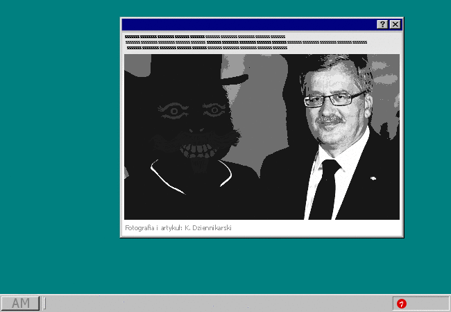

Klikasz na pierwszy artykuł dostępny na stronie.
To długi wpis, który przypomina wszystkim obywatelom o zbliżającej się celebracji założenia firmy AIDEM MEDIA dobre kilkaset lat temu. Od czasu opatentowania MAGII, a konkretniej technologii 5T, przez AIDEM MEDIA, sytuacja geopolityczna świata uległa drastycznej zmianie. Koncepcja czegoś takiego jak "państwo" rozpłynęła się w powietrzu. Podobnie miała się sprawa z innymi przestarzałymi koncepcjami, na przykład "głosowaniem" albo "pisaniem cudzysłowiów innych niż te brytyjskie, z dwoma apostrofami na górze". Z czasem sama koncepcja człowieka zaczęła ulegać zmianie, a GENETYCZNA MODYFIKACJA KODU POTOMKÓW stała się popularną usługą sprzedawaną przez AIDEM MEDIA GENETIC-ENGINEERING DEPARTMENT. To właśnie dzięki niej miałeś okazję zostać HYBRYDĄ, oczywiście upodobnioną do jednego z głównych bohaterów starożytnych powieści. Wzdrygasz na myśl o minionych czasach barbarzyństwa i przed-magicznego zacofania.
Postanawiasz o tym nie myśleć i scrollujesz przez resztę artykułu.
Na załączonym zdjęciu widzisz PANA PREZYDENTA, który spotyka się z NORMALNYM KAPELUSZNIKIEM. NORMALNY KAPELUSZNIK to daleki krewny niejakiego SZALONEGO KAPELUSZNIKA, który w starych czasach władał korporacją AIDEM MEDIA.
PAN PREZYDENT, pomimo bycia teoretycznym przywódcą zjednoczonego świata jest na tym obrazku jedynie marionetką w rękach NORMALNEGO KAPELUSZNIKA, który jest za wszystko odpowiedzialny.
Patrzysz się głęboko w oczy PANA PREZYDENTA. Może trochę zbyt głęboko.
Z hipnotycznego stanu wyrywa cię kolejna salwa denerwujących powiadomień z DISCORDA.
Ktoś się do ciebie dobija.